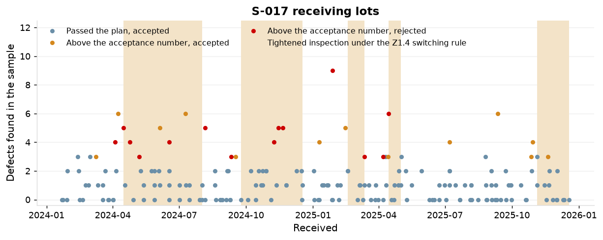
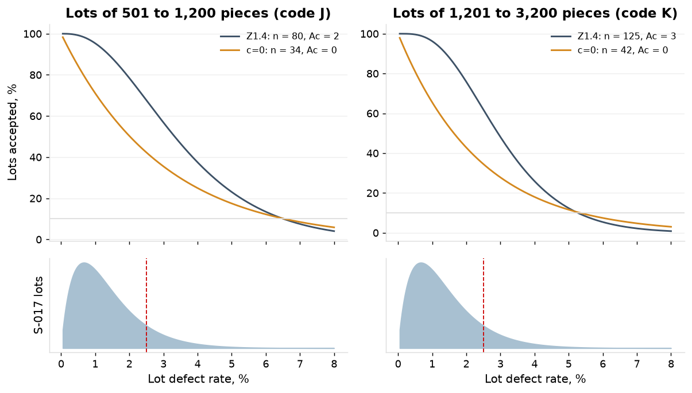
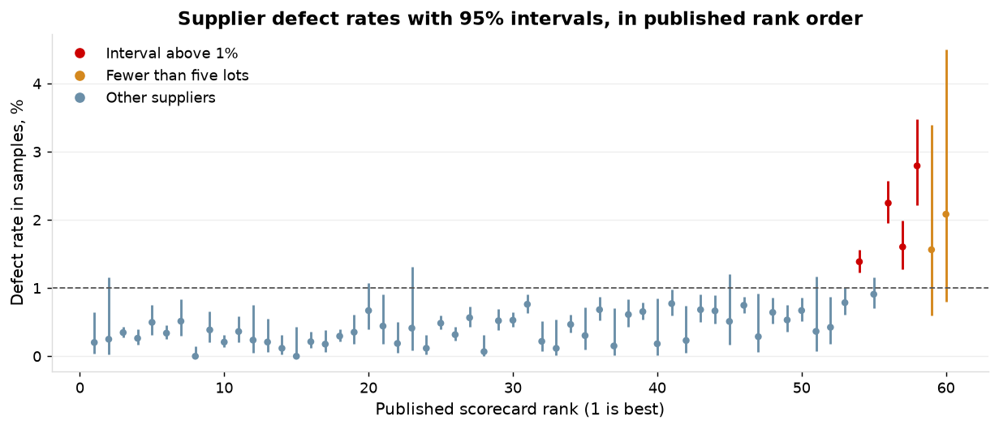

Precision machining shop, about 150 employees, IATF 16949 and AS9100, one plant. January 2024 to December 2025. Sources: receiving inspection, supplier master and published scorecard, complaints, inspection labor lines. PPAP element 15 supporting data for purchased product; supplier control.
1. The plan as operated
Normal inspection is recorded on every one of S-017's 194 lots; the Z1.4 switching rule would have put 76 of them on tightened inspection, from 15 April 2024. Across all 5,031 receiving lots the sample was below the table value on 12.4%, and 75 of the 198 lots with defects above the acceptance number were dispositioned accept (1.5% of all lots), with no deviation recorded.
Inspector
Lots
Sample below the table value
Share
Defects above the acceptance number
of them accepted
Share of all lots
E-0155
2,545
322
12.7%
94
42
1.65%
E-0156
2,486
303
12.2%
104
33
1.33%
Both
5,031
625
12.4%
198
75
1.49%
Table 1. Receiving inspection as recorded, all suppliers, by inspector.

Figure 1. Defects found in the sample of each S-017 lot, by disposition; shaded periods are those the Z1.4 switching rule would have put on tightened inspection.
2. The two plans at the shop's lot sizes
The c=0 plan gives the same LTPD as the Z1.4 plan (6.6% against 6.5% on lots of 501 to 1,200, 5.3% against 5.3% on 1,201 to 3,200) at 38% of the sample pieces. It accepts 95% of lots only at 0.15% defective or better, where the Z1.4 plan does so at 1.03%. On S-017 the Z1.4 table takes 9,695 sample pieces a year, 205 hours; the c=0 plan 3,642 pieces, 77 hours.
Plan
Lots; lot sizes
n
Ac
Accepted at 0.5%
1%
2.5%
4%
6.5%
AOQL
LTPD
Quality accepted 95% of the time
Z1.4 code J
108; 608 to 1198
80
2
99.2%
95.3%
67.7%
37.5%
10.1%
1.55%
6.5%
1.03%
c=0, lots of code J
108; 608 to 1198
34
0
84.3%
71.1%
42.3%
25.0%
10.2%
1.02%
6.6%
0.15%
Z1.4 code K
86; 1205 to 1716
125
3
99.6%
96.3%
61.9%
25.9%
3.5%
1.42%
5.3%
1.10%
c=0, lots of code K
86; 1205 to 1716
42
0
81.0%
65.6%
34.5%
18.0%
5.9%
0.84%
5.3%
0.12%
Table 2. Z1.4 single sampling (normal, level II, AQL 1.0) and the zero-acceptance plan at the same AQL, at the median lot size of each code letter on S-017.

Figure 2. OC curves of the two plans, with the lot-quality distribution of S-017 beneath; the dashed line is 2.5% defective.
3. S-017's lot quality
S-017's lots average 1.37% defective, above the AQL of 1.0%, and 12.4% of its lots are above 2.5%. The samples hold 254 defects in 18,317 pieces; the lot defect rate runs from 0.23% at the 5th percentile to 3.28% at the 95th.
4. The two plans on S-017's history
On S-017's lot history the current plan passes 47% of lots above 2.5% defective and the c=0 plan 29%. The current plan rejects 26 of 194 lots and the c=0 plan 72, because S-017 runs above the AQL.
Z1.4 as used
c=0 plan
Lots above 2.5% defective, expected of 194
24.1
24.1
Lots passing the plan: expected; from the record
167.5; 167
122.5; 123.0
Lots above 2.5% that pass: expected; from the record
11.4; 11.6
7.1; 7.3
Share of lots above 2.5% that pass
47%
29%
Lots rejected, expected
26.5
71.5
Defective pieces in lots that pass, expected
2,235
1,489
Lots dispositioned accept; above 2.5% among them, from the record
180 (13 above the acceptance number); 17.3
Table 3. The two plans on the 194 lots of S-017: expected from the fitted lot quality, and from the record of each lot's sample.
5. The escapes
9 complaints for plating defects trace to accepted S-017 lots, 70 pieces reported. By their own samples 1.8 of those lots were above 2.5% defective; their samples held 2.0 defects on average against 1.0 on the other accepted lots. They cost $117,479 in credits, $19,686 in containment and $24,061 in return freight.
6. The scorecard restated
4 of 60 suppliers have a defect rate whose 95% interval lies above 1%: S-017 (plating, 1.39%), S-030 (heat treat, 2.25%), S-041 (passivation, 1.60%), S-053 (castings, 2.79%). 47 lie entirely below 1%. Two of the five worst on the published scorecard, S-059 (4 lots) and S-056 (3 lots), are ranked on fewer than five lots. Ranked by defect rate, S-011 moves from 40 to 9 and S-021 from 5 to 35.
Supplier
Commodity
Lots
Published rank
Lot acceptance (95%)
Defect rate (95%)
On time (95%)
Restated rank
S-017
plating
194
54
92.8% (88.5 to 95.8)
1.39% (1.22 to 1.56)
91% (86 to 94)
55
S-030
heat treat
97
56
85.6% (77.6 to 91.5)
2.25% (1.95 to 2.58)
90% (82 to 95)
57
S-041
passivation
69
57
84.1% (74.1 to 91.2)
1.60% (1.27 to 1.99)
97% (91 to 99)
56
S-053
castings
45
58
82.2% (69.2 to 91.2)
2.79% (2.22 to 3.47)
100% (95 to 100)
58
S-059
other
4
59
75.0% (28.4 to 97.2)
1.56% (0.60 to 3.39)
100% (56 to 100)
fewer than five lots
S-056
castings
3
60
66.7% (17.7 to 96.1)
2.08% (0.80 to 4.51)
67% (18 to 96)
fewer than five lots
S-011
bar
45
40
97.8% (90.1 to 99.8)
0.18% (0.02 to 0.85)
87% (75 to 94)
9
S-021
plating
44
5
100.0% (94.5 to 100.0)
0.50% (0.31 to 0.75)
98% (90 to 100)
35
S-050
anodizing
35
7
100.0% (93.1 to 100.0)
0.51% (0.29 to 0.84)
97% (87 to 100)
37
S-014
bar
52
37
98.1% (91.4 to 99.8)
0.15% (0.02 to 0.70)
98% (91 to 100)
7
S-013
bar
70
33
98.6% (93.5 to 99.8)
0.12% (0.01 to 0.54)
91% (83 to 96)
4
Table 4. The suppliers above 1%, the two ranked on fewer than five lots, and the five largest moves in rank; restated rank is by defect rate among the 58 suppliers with five lots or more.

Figure 3. Defect rate in the receiving samples with its 95% interval for every supplier, in published rank order; the dashed line is 1%.
Recommendation
Apply the Z1.4 switching rules as written: reduced inspection for suppliers that qualify and tightened for those that do not. On the record, 2,530 of the 4,309 lots of the 47 suppliers below 1% would have been on reduced inspection (47 suppliers qualify), saving 108,761 sample pieces and 2,298 hours in 24 months; 191 of the 405 lots of the four suppliers above 1% would have been on tightened, with 111 lots not accepted where 83 failed the plan on normal inspection.
The c=0 plan at AQL 1.0 is the option where a customer requires it; on this record it rejects 72 of 194 S-017 lots and about 534 of the 4,309 lots of the suppliers below 1%.
For S-017 and the three other suppliers above 1% the plan is not the lever: a supplier corrective action with the lot history as the evidence, and source inspection or 100% sort at the supplier's cost until the interval falls below 1%.
Record the inspection level on every receiving lot.
Publish the scorecard with intervals and a minimum of five lots for a rank.
Stop accepting lots above the acceptance number without a recorded deviation.
Method and data
Plans: ANSI/ASQ Z1.4 single sampling, normal inspection, general level II, AQL 1.0; the zero-acceptance plan from the published table at the same AQL, which carries no switching rule. OC curves are binomial where the lot is above ten times the sample and hypergeometric otherwise, lot by lot. Lot quality: a beta distribution fitted by maximum likelihood to the defects found in each sample (a 1.92, b 137.8). Lots above 2.5% from the record: each lot that passed, weighted by the chance that it is above 2.5% given its own sample and the fitted distribution; a construction, since no lot's rate is observed. The c=0 plan on the record: the chance that its sample, drawn from the sample taken, holds no defect. Switching: tightened after 2 of 5 consecutive lots not accepted, normal again after 5 consecutive accepted, tightened acceptance numbers on the same samples; reduced from a switching score of 30 (plus 3 for a lot that passes one AQL step tighter where the acceptance number is 2 or more, plus 2 for an accepted lot otherwise, reset on any other result), production taken as steady, back to normal on a lot above the reduced acceptance number; the reduced sample is drawn from the sample taken and the result averaged over 400 seeded replications. Hours: the receiving inspectors' booked hours (7,472 in 24 months) over the pieces they sampled on all 5,031 lots (353,592) give 1.27 minutes per sampled piece. Rate intervals are Jeffreys intervals. Restated rank: by defect rate among suppliers with five lots or more.
Appendix
Code letter
Lots in 24 months
Z1.4 table: pieces; hours
As taken: pieces
c=0 plan: pieces; hours
c=0 against Z1.4
J
108
8,640; 183
8,143
3,672; 78
42%
K
86
10,750; 227
10,174
3,612; 76
34%
Both
194
19,390; 410
18,317
7,284; 154
38%
Table A1. Sample pieces and inspection hours on S-017 over 24 months under each plan, at 1.27 minutes per sampled piece.
Suppliers by defect-rate interval
Suppliers
Lots
Z1.4 table pieces
c=0 pieces
c=0 against Z1.4
Lots not passing the current plan
Lots the c=0 plan rejects, expected
interval above 1%
4
405
36,466
14,201
39%
83
167
interval below 1%
47
4,309
315,346
129,706
41%
95
534
interval includes 1%
9
317
20,262
8,679
43%
20
55
Table A2. The two plans on every supplier's lots, by where the supplier's defect-rate interval lies.
Suppliers by defect-rate interval
Suppliers
Lots
Lots on reduced
Suppliers reaching reduced
Lots on tightened
Sample pieces: table; with switching
Hours: table; with switching
Lots not accepted: as used; with switching
interval above 1%
4
405
0
0
191
36,466; 36,466
771; 771
83; 111
interval below 1%
47
4,309
2,530
47
64
315,346; 206,585
6,664; 4,366
95; 61
interval includes 1%
9
317
0
0
10
20,262; 20,262
428; 428
20; 20
Table A3. The Z1.4 switching rules applied to every supplier's lot sequence over 24 months: reduced inspection for the suppliers below 1%, tightened for all.
Value
Defects found over pieces sampled
254 of 18,317 (1.39%)
Lot defect rate: mean; 5th percentile; median; 95th percentile
1.37%; 0.23%; 1.15%; 3.28%
Share of lots above 2.5% defective
12.4%
Table A4. S-017's lot quality from the receiving samples.
Complaint
Received
Lot
Pieces reported
Sample; defects; acceptance number
Disposition
Chance the lot was above 2.5%
CC-24-019
2024-06-04
L24-0130
9
80; 0; 2
accept
2%
CC-24-021
2024-06-08
L24-0338
7
80; 0; 2
accept
2%
CC-24-033
2024-08-23
L24-0575
8
125; 6; 3
accept
65%
CC-24-038
2024-10-09
L24-0745
6
125; 2; 3
accept
10%
CC-24-039
2024-10-10
L24-0755
7
125; 0; 3
accept
1%
CC-24-043
2024-12-17
L24-0902
15
125; 1; 3
accept
4%
CC-25-010
2025-05-03
L25-0185
4
59; 1; 2
accept
12%
CC-25-018
2025-06-02
L25-0285
11
125; 6; 3
reject
65%
CC-25-027
2025-08-18
L25-0548
3
80; 2; 2
accept
19%
Table A5. Complaints for plating defects on accepted S-017 lots.
Value
Inspection recorded
normal on every lot (code letters J, K)
Switches to tightened under the Z1.4 rule
5, the first on 2024-04-15
Lots that would have been on tightened
76 of 194
Lots not accepted: on normal; on tightened
16; 22
Table A6. The Z1.4 switching rule on S-017's lot sequence.
Supplier
Commodity
Lots
Published rank
Lot acceptance (95%)
Defect rate (95%)
On time (95%)
Restated rank
S-049
anodizing
11
1
100.0% (80.0 to 100.0)
0.20% (0.04 to 0.65)
100% (80 to 100)
11
S-060
other
5
2
100.0% (62.1 to 100.0)
0.25% (0.03 to 1.16)
100% (62 to 100)
18
S-033
heat treat
244
3
100.0% (99.0 to 100.0)
0.35% (0.28 to 0.43)
98% (96 to 99)
25
S-057
other
52
4
100.0% (95.3 to 100.0)
0.26% (0.17 to 0.40)
98% (91 to 100)
19
S-021
plating
44
5
100.0% (94.5 to 100.0)
0.50% (0.31 to 0.75)
98% (90 to 100)
35
S-023
plating
132
6
100.0% (98.1 to 100.0)
0.34% (0.25 to 0.45)
98% (94 to 99)
24
S-050
anodizing
35
7
100.0% (93.1 to 100.0)
0.51% (0.29 to 0.84)
97% (87 to 100)
37
S-004
bar
144
8
100.0% (98.3 to 100.0)
0.00% (0.00 to 0.14)
97% (93 to 99)
1
S-032
heat treat
33
9
100.0% (92.7 to 100.0)
0.39% (0.21 to 0.65)
94% (82 to 99)
29
S-048
anodizing
99
10
100.0% (97.5 to 100.0)
0.21% (0.13 to 0.31)
94% (88 to 97)
12
S-029
heat treat
45
11
100.0% (94.6 to 100.0)
0.36% (0.21 to 0.59)
93% (83 to 98)
27
S-009
bar
69
12
100.0% (96.4 to 100.0)
0.24% (0.05 to 0.76)
91% (83 to 96)
17
S-019
plating
21
13
100.0% (88.9 to 100.0)
0.21% (0.06 to 0.55)
90% (73 to 98)
13
S-024
plating
30
14
100.0% (92.0 to 100.0)
0.12% (0.03 to 0.31)
90% (76 to 97)
5
S-012
bar
46
15
100.0% (94.7 to 100.0)
0.00% (0.00 to 0.44)
89% (78 to 96)
2
S-058
other
41
16
100.0% (94.1 to 100.0)
0.21% (0.12 to 0.36)
85% (72 to 94)
14
S-046
anodizing
34
17
100.0% (92.9 to 100.0)
0.18% (0.07 to 0.39)
85% (71 to 94)
8
S-018
plating
142
18
100.0% (98.2 to 100.0)
0.29% (0.21 to 0.40)
85% (78 to 90)
21
S-055
castings
53
19
100.0% (95.4 to 100.0)
0.35% (0.19 to 0.61)
83% (71 to 91)
26
S-047
anodizing
22
20
100.0% (89.3 to 100.0)
0.67% (0.39 to 1.07)
82% (62 to 94)
46
S-054
castings
22
21
100.0% (89.3 to 100.0)
0.44% (0.19 to 0.91)
82% (62 to 94)
32
S-028
heat treat
16
22
100.0% (85.7 to 100.0)
0.19% (0.05 to 0.50)
81% (58 to 94)
10
S-052
castings
8
23
100.0% (73.8 to 100.0)
0.41% (0.09 to 1.32)
75% (41 to 94)
30
S-035
heat treat
34
24
100.0% (92.9 to 100.0)
0.12% (0.03 to 0.31)
74% (57 to 86)
6
S-044
passivation
212
25
99.5% (97.8 to 99.9)
0.49% (0.39 to 0.60)
87% (82 to 91)
34
S-042
passivation
145
26
99.3% (96.8 to 99.9)
0.32% (0.23 to 0.43)
94% (89 to 97)
23
S-020
plating
121
27
99.2% (96.2 to 99.9)
0.57% (0.43 to 0.72)
99% (96 to 100)
41
S-005
bar
121
28
99.2% (96.2 to 99.9)
0.07% (0.01 to 0.32)
84% (77 to 90)
3
S-022
plating
100
29
99.0% (95.4 to 99.9)
0.52% (0.38 to 0.69)
98% (94 to 100)
38
S-036
heat treat
188
30
98.9% (96.6 to 99.8)
0.53% (0.43 to 0.65)
87% (81 to 91)
39
S-051
castings
267
31
98.9% (97.0 to 99.7)
0.76% (0.64 to 0.91)
86% (81 to 90)
51
S-003
bar
147
32
98.6% (95.7 to 99.7)
0.22% (0.07 to 0.52)
90% (85 to 94)
15
S-013
bar
70
33
98.6% (93.5 to 99.8)
0.12% (0.01 to 0.54)
91% (83 to 96)
4
S-025
plating
121
34
98.3% (94.8 to 99.7)
0.47% (0.35 to 0.61)
89% (83 to 94)
33
S-002
bar
107
35
98.1% (94.1 to 99.6)
0.30% (0.10 to 0.72)
78% (69 to 85)
22
S-026
plating
105
36
98.1% (94.0 to 99.6)
0.68% (0.53 to 0.87)
81% (73 to 88)
49
S-014
bar
52
37
98.1% (91.4 to 99.8)
0.15% (0.02 to 0.70)
98% (91 to 100)
7
S-015
plating
51
38
98.0% (91.2 to 99.8)
0.61% (0.43 to 0.84)
80% (68 to 89)
42
S-039
passivation
188
39
97.9% (95.0 to 99.3)
0.65% (0.54 to 0.79)
70% (63 to 76)
44
S-011
bar
45
40
97.8% (90.1 to 99.8)
0.18% (0.02 to 0.85)
87% (75 to 94)
9
S-034
heat treat
82
41
97.6% (92.4 to 99.5)
0.77% (0.60 to 0.98)
80% (71 to 88)
52
S-010
bar
70
42
97.1% (91.1 to 99.4)
0.23% (0.05 to 0.74)
91% (83 to 96)
16
S-031
heat treat
70
43
97.1% (91.1 to 99.4)
0.68% (0.50 to 0.91)
87% (78 to 93)
48
S-038
passivation
67
44
97.0% (90.8 to 99.4)
0.67% (0.48 to 0.90)
88% (79 to 94)
45
S-007
bar
64
45
96.9% (90.4 to 99.3)
0.51% (0.17 to 1.21)
97% (90 to 99)
36
S-040
passivation
215
46
96.7% (93.7 to 98.5)
0.75% (0.63 to 0.88)
92% (87 to 95)
50
S-006
bar
58
47
96.6% (89.4 to 99.3)
0.29% (0.06 to 0.92)
90% (80 to 96)
20
S-037
passivation
79
48
96.2% (90.2 to 98.9)
0.64% (0.47 to 0.85)
97% (92 to 99)
43
S-045
anodizing
71
49
95.8% (89.2 to 98.8)
0.53% (0.36 to 0.75)
87% (78 to 94)
40
S-043
passivation
93
50
95.7% (90.1 to 98.5)
0.67% (0.52 to 0.86)
72% (62 to 80)
47
S-001
bar
45
51
95.6% (86.5 to 99.1)
0.36% (0.08 to 1.17)
80% (67 to 90)
28
S-008
bar
117
52
94.9% (89.7 to 97.8)
0.42% (0.18 to 0.87)
97% (92 to 99)
31
S-027
heat treat
89
53
94.4% (88.1 to 97.8)
0.79% (0.61 to 1.00)
84% (76 to 91)
53
S-017
plating
194
54
92.8% (88.5 to 95.8)
1.39% (1.22 to 1.56)
91% (86 to 94)
55
S-016
plating
77
55
92.2% (84.6 to 96.7)
0.91% (0.71 to 1.15)
75% (65 to 84)
54
S-030
heat treat
97
56
85.6% (77.6 to 91.5)
2.25% (1.95 to 2.58)
90% (82 to 95)
57
S-041
passivation
69
57
84.1% (74.1 to 91.2)
1.60% (1.27 to 1.99)
97% (91 to 99)
56
S-053
castings
45
58
82.2% (69.2 to 91.2)
2.79% (2.22 to 3.47)
100% (95 to 100)
58
S-059
other
4
59
75.0% (28.4 to 97.2)
1.56% (0.60 to 3.39)
100% (56 to 100)
fewer than five lots
S-056
castings
3
60
66.7% (17.7 to 96.1)
2.08% (0.80 to 4.51)
67% (18 to 96)
fewer than five lots
Table A7. The scorecard restated, all 60 suppliers in published rank order.